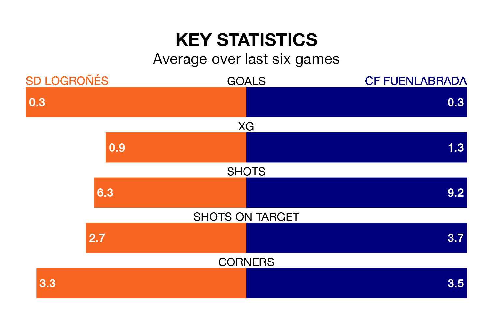

SD Logroñés and CF Fuenlabrada both come into Saturday's late kick-off at the Estadio Nuevo Municipal Las Gaunas in poor form, having picked up three and one points respectively in their last six games.
Logroñés have drawn three and lost three of the last six, while Fuenlabrada have taken just one draw.
Logroñés are bottom of the table after 34 games, of which they have won seven and drawn seven, earning 28 points.
Fuenlabrada are six places ahead of the home side in 14th, with nine wins and 12 draws putting them on 39 points.
With 22 goals in 34 games so far this season, Logroñés are the league's lowest scorers with 0.6 goals per game. And they are conceding more than average, letting in 52 goals at a rate of 1.5 per game.
The visitors are also below average scorers, with 0.9 goals per game, compared to a league average of 1.1. They have conceded 1.1 goals per game.
In Fernando Ruiz Izaguirre, Fuenlabrada have one of the league's most on-form strikers so far this season. He has notched six goals in 24 appearances, to sit ninth in the scoring charts.
His goal rate of one every 344 minutes is quicker than that of Jordi Escobar Fernández, Logroñés's top scorer with a goal every 380 minutes, and a total of five goals in 22 games.
Logroñés's last match was on April 27, a 4-0 loss against Celta de Vigo B.
Fuenlabrada drew 0-0 with CD Teruel last time out, also on April 27.
Updated: 10:44 (UTC), 30/04/24